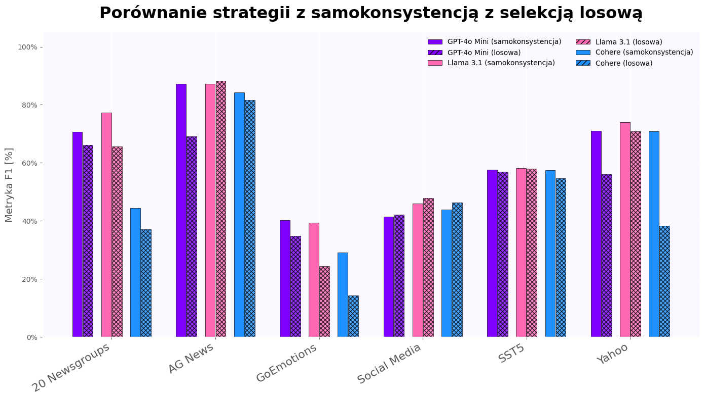

The selection of examples for prompting significantly affects the performance of large language models in annotation tasks. The quality of predictions can improve or degrade depending on which data is presented as examples. The project implemented and tested both classical and novel methods. Classical methods included random selection, uncertainty-based strategies, and chain-of-thought techniques. We also explored choosing unstable classifications, semantically representative data, and mixtures of Gaussian distributions. Experiments were conducted on six datasets using three LLMs. The best results were achieved with chain-of-thought reasoning using five stochastic generations at temperature 0.3, selecting the most frequent variant as the final prediction. Most datasets showed improvement over random baselines. However, no universal strategy worked for all cases. A methodological framework is needed to select strategies depending on the task, data, and model. A key challenge is that large language models are sensitive to small changes in prompts that may be insignificant to humans but lead to major shifts in model output.
